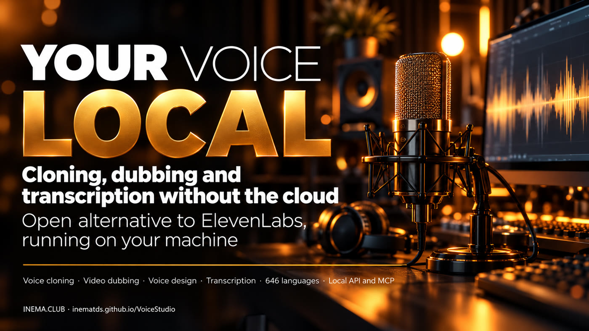

Voice cloning, voice from a description, dubbing and transcription in 646 languages, on your own machine and with no per-minute fees.

VoiceStudio is a free, open-source program that does on your computer what paid services like ElevenLabs do in the cloud. It copies a voice from a few seconds of recording, creates new voices from a text description, dubs videos and transcribes audio in 646 languages. It is for anyone who makes videos, courses, podcasts or audiobooks and wants narration without paying per minute or sending the audio elsewhere. You need a computer with about 10 GB free; with an NVIDIA graphics card it is much faster.
A project by debpalash/VoiceStudio (AGPL-3.0 license), mirrored by INEMA with this guide. Everything runs on your hardware; remote services are optional.
A clean recording of a few seconds becomes a reusable voice. Or describe the voice ("female, deep, documentary tone") and it builds a new one.
Video dubbing with speech in the right timing, transcription with WhisperX, speaker separation and isolation of the voice from the background music.
A local API compatible with OpenAI's and an MCP server: Claude Code and Codex can generate speech, clone voices and transcribe directly.
The app (Electron) talks to a Python backend on port 3900. The backend loads the chosen engine and keeps the models in memory.
OmniVoice (default, 646 languages), CosyVoice 3, IndexTTS 2.5, VoxCPM2, MOSS-TTS, dots.tts, GPT-SoVITS, KittenTTS, Supertonic 3, PocketTTS and others. Each one has its own model license.
WhisperX (default), Faster-Whisper, Whisper, Parakeet TDT, Moonshine, FunASR and sherpa-onnx for live dictation.
Ready-made packages are available for Windows, macOS and Linux x86_64. On Linux ARM64 (such as the DGX Spark/GB10) there is no package or Docker image: only the install from source code.
About 10 GB free for the app, Python and the models. NVIDIA (CUDA) or Apple Silicon speed it up; without a card it runs on the CPU, more slowly.
# check space and GPU df -h ~ ; nvidia-smi
Nothing beyond the installer: it downloads Python, FFmpeg, yt-dlp and the models on first use.
# macOS / Linux x86_64 curl -fsSL https://voicestudio.sh/install | sh
Git, Bun, uv, Node.js 22+ and Rust/Cargo, plus the system audio libraries.
curl -fsSL https://bun.sh/install | bash curl -LsSf https://astral.sh/uv/install.sh | sh
The commands below come from the project's official documentation.
On Windows, use PowerShell. On macOS and Linux x86_64, the one-line script. Or download the .dmg, .exe, .AppImage or .deb from the Releases page.
# Windows (PowerShell) irm https://voicestudio.sh/install | iex # macOS / Linux x86_64 curl -fsSL https://voicestudio.sh/install | sh
This is the path on Linux ARM64 and for anyone who wants the newest version. setup:api prepares Python; dev opens the app and starts the backend.
git clone https://github.com/inematds/VoiceStudio.git cd VoiceStudio bun install bun run setup:api # Python environment with uv bun run dev # app + backend on port 3900
To use it through the API or MCP on a server, start only the backend. Without an NVIDIA card, force the CPU version of PyTorch.
bun run dev:api # backend on 127.0.0.1:3900 OMNIVOICE_TORCH_VARIANT=cpu bun run setup:api # without NVIDIA curl http://127.0.0.1:3900/.well-known/voicestudio-speech
In the app, open Voice cloning, pick a voice or upload a clean recording (no music, no noise), type the text and generate. The app asks you to install the model the first time (about 2.4 GB).
# transcribe a file with the client that ships with the project python -m backend.speech_client transcribe recording.wav
The MCP server is already mounted on the backend at /mcp/. Tools: generate_speech, clone_voice, design_voice, transcribe, list_voices. Example for the Codex CLI:
# ~/.codex/config.toml [mcp_servers.voicestudio] url = "http://127.0.0.1:3900/mcp/" http_headers = { "X-OmniVoice-Client-Id" = "codex-cli" }
In Claude Code, the app exports a ready-made .mcp.json under Integrations.
Usage analytics only turn on with consent. To make sure it stays off, set the variable before starting the backend.
export OMNIVOICE_ANALYTICS_DISABLED=1
Comparison with our voice chain (inemavox with chatterbox, Whisper and dubbing; avatar through the HeyGen studio).
| Function | Today at INEMA | VoiceStudio |
|---|---|---|
| Download | inemavox (yt-dlp) | yt-dlp as well: nothing new |
| Transcription | Whisper large-v3 / Parakeet | Equivalent (WhisperX, Parakeet) |
| Voice cloning | chatterbox (voices nei, rachel) | 17 engines, including OmniVoice, CosyVoice 3 and IndexTTS 2.5 |
| EN/ES voice without an avatar | Depends on the HeyGen studio | Multilingual engines with cloning |
| Voice from a description | We don't have it | Yes (design_voice) |
| Isolate voice / separate speakers | We don't have it | Yes |
| Agents | Our own scripts | MCP and API in the OpenAI format |
The mirror and this guide are published; the hands-on test has not been done yet.